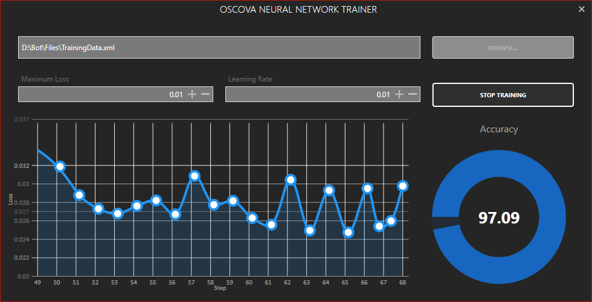

Oscova Machine Learning
Machine Learning in Oscova is powered by advanced neural network system the core architecture of which is designed to train fastly and build intelligent models by extracting relevant features from expressions declared within Dialogs.

Tip
Machine Learning works best when enough expressions are provided for intents.
Enabling Machine Learning (ML)
There are 2 expression processing modes in Oscova.
- Rule
- RuleAndML
To enable Machine Learning in Oscova change the value of ProcessingMode in bot configuration to RuleAndML.
Example
var bot = new OscovaBot();
bot.Configuration.ProcessingMode = ProcessingMode.RuleAndML;
bot.Dialogs.Add(new PizzaDialog());
bot.Trainer.StartTraining(); May take several minutes to complete.
When ML is enabled, Oscova automatically generates positive and negative training samples from expressions and feeds them to the neural network during the training process.
Once the neural network training has completed, Oscova calibrates the score received by the neural network and the NLP engine.
Tip
Machine Learning must only be enabled once the Bot dialog development has completed and the Bot is ready for deployment. Enabling Machine Learning in smaller projects may yield lower improvements in intent scoring.
Training via Syn Bot Studio
To train Oscova's Neural Network via Syn Bot Studio you will first need to extract the TrainingData from Oscova Bot. You can retrieve the training data as an XML Document by calling the GetTrainingData() method on the Trainer property.
Example
var bot = new OscovaBot();
bot.Configuration.ProcessingMode = ProcessingMode.RuleAndML;
bot.Dialogs.Add(new PizzaDialog());
var trainingDocument = bot.Trainer.GetTrainingData();
trainingDocument.Save("TrainingData.xml"); //Saves the training data to an XML file.
After the training data is saved follow the steps below to generate a trained neural network model.
- Launch Syn Bot Studio, click on Tools select Oscova and then choose Neural Network Trainer
- In Neural Network Trainer window, click on Browse... and select the
TrainingData.xmlfile. - To begin training, click on Start Training.

Selecting minimum Loss
The lower the Loss of the Neural Network the better trained is the model. After clicking on Start Training the Loss-Step chart will display the current Loss of the network.
If the Loss is way above the specified Minimum Loss value and there is no significant change in the value for long, restart the training by clicking on Stop Training and then clicking on Start Training back again.
If the Loss value is close to the specified Minimum Loss value and there is no significant change in the value for long, stop the training and you will be presented with the Minimum Loss Achieved value. Using this value as reference adjust the Minimum Loss and press Start Training again.
Note
It may take several minutes for the Neural Network to be trained depending on the number of internal samples generated for each expression.
Loading trained model
Once the training is successful, the trained model will be saved in the same directory where the training data is placed. You may now load the trained model into Oscova using the overloaded StartTraining() method.
Example
var bot = new OscovaBot();
bot.Configuration.ProcessingMode = ProcessingMode.RuleAndML;
bot.Dialogs.Add(new SomeDialog());
bot.Trainer.StartTraining(XDocument.Load("Trained_Model.osml"));
Saving Trained Model without Syn Bot Studio
If for some reason you are not using Syn Bot Studio, you can still save the Trained Model by handling the TrainingFinished event.
Example
var bot = new OscovaBot();
bot.Configuration.ProcessingMode = ProcessingMode.RuleAndML;
bot.Dialogs.Add(new SomeDialog());
//When the training has finished, the model is saved within Trained_Model.osml file.
bot.TrainingFinished += (sender, args) =>
{
args.TrainedModel.Save("Trained_Model.osml");
};
bot.Trainer.StartTraining();